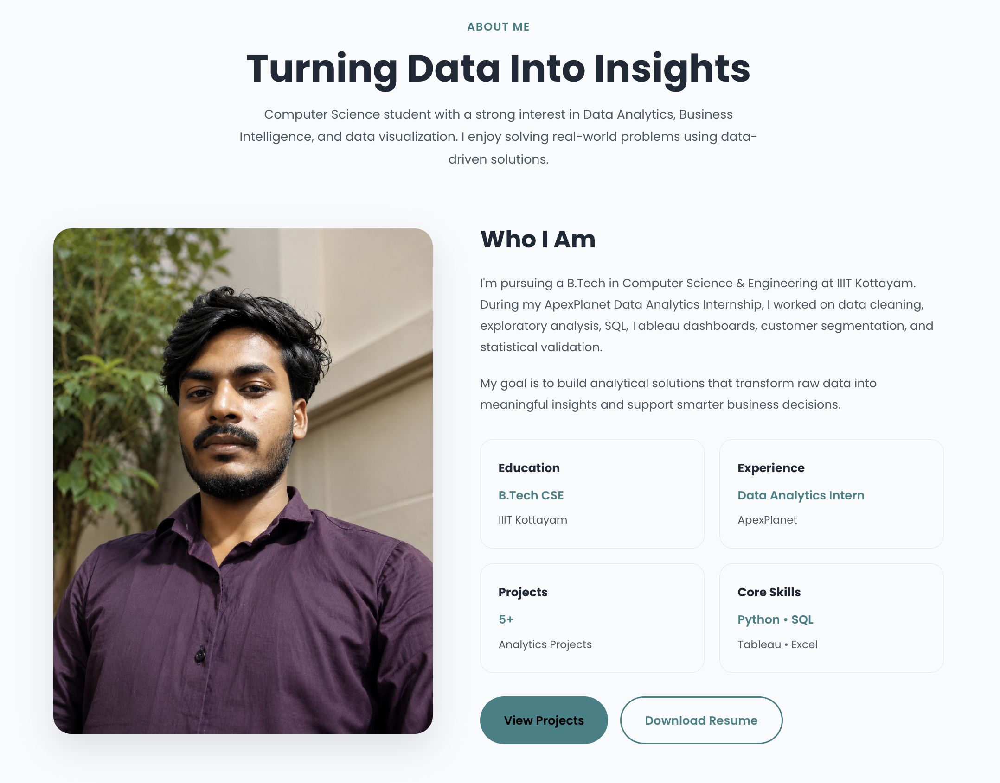
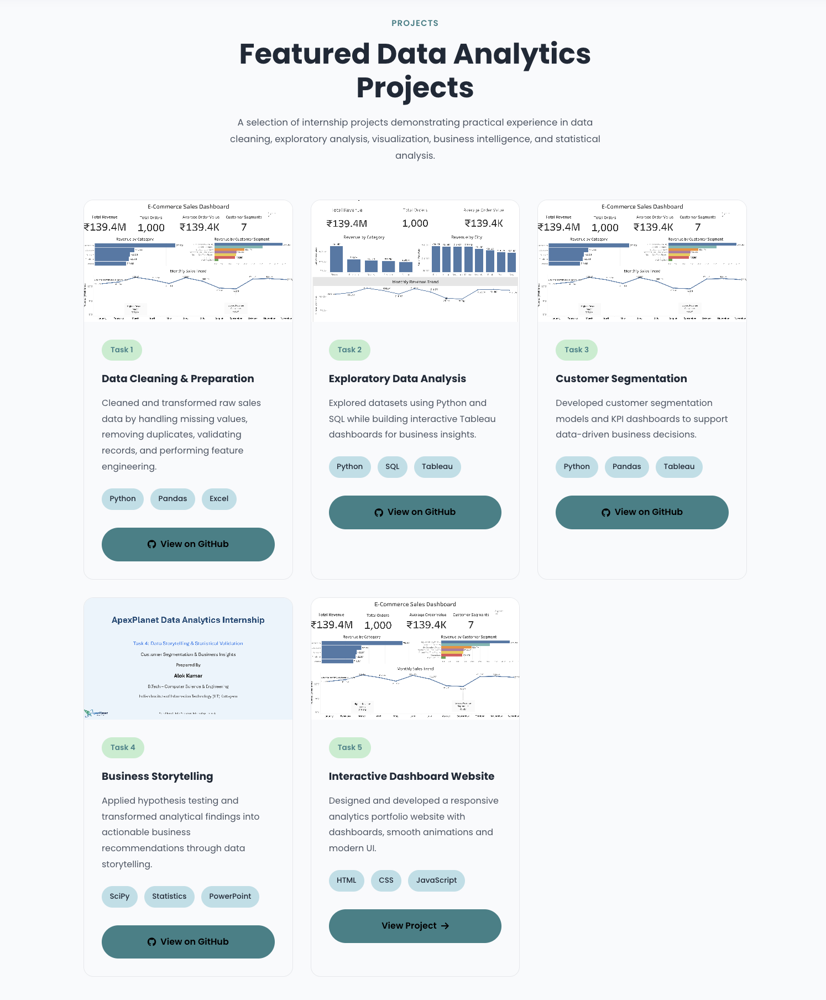
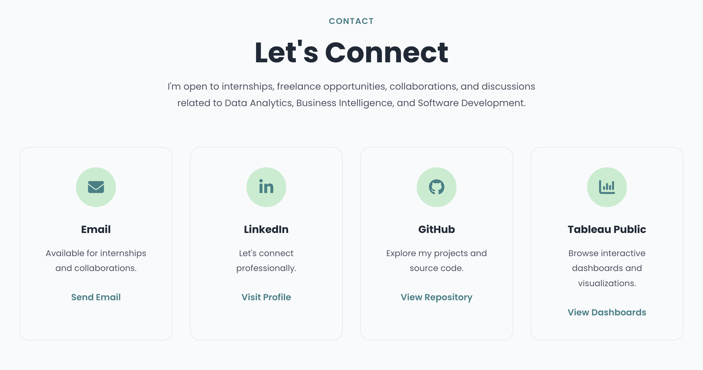

Live Preview
Website Preview
A modern portfolio website designed with responsive layouts, smooth animations, and an intuitive user experience.
A responsive portfolio website developed to showcase data analytics projects, internship tasks, dashboards, technical skills, and certifications through a modern, engaging, and user-friendly interface.
1 Week
Frontend Developer
HTML • CSS • JS
Completed
A snapshot of the website highlighting its responsive design, development approach, and interactive features.
Website Sections
Responsive Layout
Core Technologies
Interactive Elements
A modern portfolio website designed with responsive layouts, smooth animations, and an intuitive user experience.
This project was developed to create a professional portfolio website that effectively presents internship work, technical skills, dashboards, and projects through a clean and engaging user interface.
The Interactive Dashboard Website serves as a centralized portfolio to showcase my Data Analytics journey, internship projects, technical expertise, certifications, and hands-on work completed during the ApexPlanet Data Analytics Internship.
The design focuses on simplicity, responsiveness, smooth navigation, and modern UI principles while ensuring easy access to every project and resource.
The portfolio combines responsive design, modern aesthetics, and interactive components to create an engaging browsing experience.
Optimized layouts for desktop, tablet, and mobile devices.
Typing effects, hover animations, counters, and scroll reveal effects enhance the user experience.
Internship tasks are presented using professional project cards with detailed information.
Clean layouts, premium typography, and a consistent color palette throughout the website.
Built using structured HTML, reusable CSS components, and modular JavaScript.
Lightweight assets and optimized animations ensure smooth performance across all devices.
Core technologies and tools used throughout the development of this project.
Every project presents unique challenges. This website helped strengthen my frontend development and UI design skills while improving my understanding of responsive web development.
Explore the live portfolio, GitHub repository, and stakeholder presentation created during this internship project.
Screenshots highlighting different sections of the portfolio.

Hero section with animations.

Professional profile and background.

Internship project showcase.

Connect through email and social links.